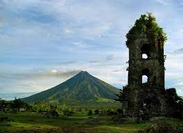

Albay

Albay, officially the Province of Albay (Central Bikol: Probinsya kan Albay; Tagalog: Lalawigan ng Albay IPA: [ɐlbaɪ]), is a province in the Bicol Region of the Philippines, mostly on the southeastern part of the island of Luzon. Its capital is the city of Legazpi, the regional center of the whole Bicol Region, which is located in the southern foothill of Mayon Volcano.
The province was added to the UNESCO World Network of Biosphere Reserves in March 2016.
Long before the Spaniards arrived, Albay had a thriving civilization. Formerly called Ibat, and then Libog, Albay was once ruled by Gat Ibal, an old chief who also founded the old barangay of Sawangan, now part of the City of Legazpi. Historian William Henry Scott wrote that in the local epic called siday entitled "Bingi of Lawan", an Albay Datu by the name of Dumaraog went to the Lakanate of Lawan to ask for the hands of Bingi bringing with him 100 ships. Lawan is a prosperous Lakanate in Samar. Datu Hadi Iberein came from the Lakanate of Lawan. He was described by Scott as a “Samar datu by the name of Iberein was rowed out to a Spanish vessel anchored in his harbor in 1543 by oarsmen collared in gold; while wearing on his own person earrings and chains.”
In July 1569, Luis Enriquez de Guzman, a member of the expedition led by Maestro de Campo Mateo de Saz and Captain Martin de Goiti, led a group which crossed from Burias and Ticao islands and landed on a coastal settlement called Ibalon in what is now the province of Sorsogon. From this point another expedition was sent to explore the interior and founded the town of Camalig.
In 1573, Juan de Salcedo penetrated the Bicol Peninsula from the north as far south as Libon, establishing the settlement of Santiago de Libon. Jose Maria Peñaranda, a military engineer, was made “corregidor” of the province on May 14, 1834. He constructed public buildings and built roads and bridges.
The entire Bicol Peninsula was organized as one province with two divisions, Camarines in the northwest and Ibalon in the southeast. In 1636, the two partidos were separated, and Ibalon became a separate province with Sorsogon as capital. In the 17th century, Moro slave raiders from southern Philippines ravaged the northeastern coastal areas of the province of Albay.
Mayon Volcano, in one of its most violent eruptions, destroyed the five towns surrounding its base on February 1, 1814. This eruption forced the town of Cagsawa to relocate to its present site, Legazpi.A decree was issued by Governor-General Narciso Claveria in 1846 separating Masbate, Ticao and Burias from Albay to form the comandancia of Masbate. Albay was then divided into four districts: Iraya, Cordillera or Tabaco, Sorsogon and Catanduanes.
